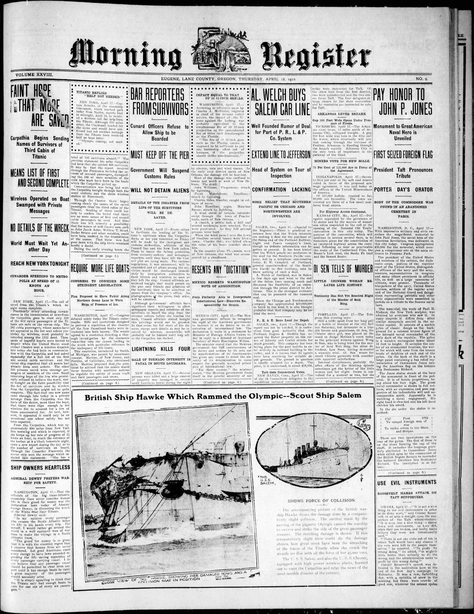

HN-383: Newspaper updates Titanic toll but repeats false lifeboat assurances
HN-383 · April 19, 1912 · Transportation & Maritime > Shipwrecks, Maritime Accidents & Losses > Sinkings, capsizings and foundering

page scanRecorded finding
Titanic Carpathia arrival, survivor lists and lifeboat updates contradicted early optimistic bulletins.
Identity-review candidate peers: HN-382:High
Curated audit flag
Class: Revision/retraction (R)
Recorded difference/concern: Titanic Carpathia arrival, survivor lists and lifeboat updates contradicted early optimistic bulletins.
Assessment: Continuation of HN-382, not a second sinking.
Source links: https://oregonnews.uoregon.edu/lccn/sn96088115/1912-04-18/ed-1/seq-1/ https://paperspast.natlib.govt.nz/newspapers/NZH19120418.2.28 https://oregonnews.uoregon.edu/lccn/sn96088449/1912-04-19/ed-1/seq-6/ocr/
Original archive images (5)
Authentic images retrieved from Historic Oregon Newspapers (University of Oregon), Papers Past (National Library of New Zealand), Library of Virginia (Titanic in Black and White exhibit) and Hoosier State Chronicles (Indiana State Library). Article crops are located using the archive's own OCR word coordinates and rendered at native crop resolution; article clips are assembled from the archive's own article-block images; page images marked "archive tiles" are stitched from the archive's own tiled page service at its 256-px tile cap; page images marked "issue PDF" are single pages rasterised from the archive's own issue PDF, with the page chosen by matching the headline against the PDF's text layer; page scans are reduced-size access renditions. No images were generated, mocked, or retouched.

Historic Oregon Newspapers (University of Oregon)
Open larger view · Archive viewer (full resolution)

Papers Past (National Library of New Zealand)
Open full-resolution clip · Archive viewer (full resolution)

Library of Virginia (Titanic in Black and White exhibit)
Open larger view · Archive viewer (full resolution)

Historic Oregon Newspapers (University of Oregon)
Open larger view · Archive viewer (full resolution)

Hoosier State Chronicles (Indiana State Library)
Open larger view · Archive viewer (full resolution)
Source acquisition
Status: Archive images acquired
Authentic archive-owned image renditions were retrieved for this record and are displayed above. The source-acquisition manifest preserves the original pre-acquisition feasibility assessment.
Original seed
URL (preserved verbatim): https://newspapers.library.in.gov/?a=d&d=WLKI19120419.1.6
Saved research report: Historical_Newspaper_Event_Research_378-402_2026-10-23.md
Evidence note: A newspaper report means a historical publication made a claim; it does not establish that claim as fact. Contemporary reporting is separated from later scholarly context and our own assessment.